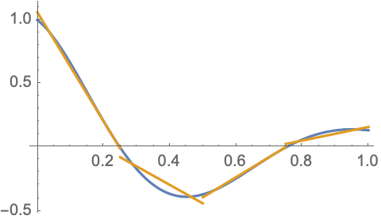
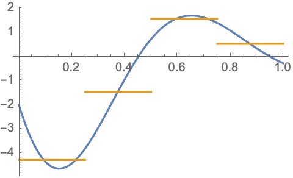
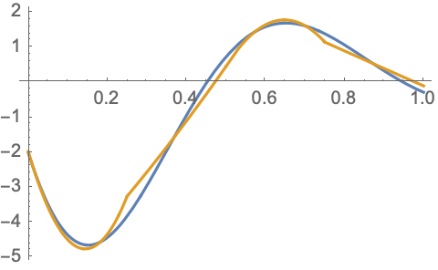

Weak Formulations
$ \newcommand{\cross}{\times} \newcommand{\inner}{\cdot} \newcommand{\div}{\nabla\cdot} \newcommand{\curl}{\nabla\times} \newcommand{\grad}{\nabla} \newcommand{\ddx}[1]{\frac{d#1}{dx}} \newcommand{\abs}[1]{|#1|} \newcommand{\dO}{{\partial\Omega}} $
Spaces of finite element basis functions are rarely rich enough to contain exact solutions to partial differential equations (PDEs) of interest. This is particularly true when we consider the irregular domains that often arise in practical simulations. One consequence of this is that finite element solutions often don't precisely satisfy the continuous PDEs being modeled. The goal is to build a finite element solution which approximates the true solution and satisfies the PDE in a weaker sense.
Consider a general linear differential operator $L(u)$ and the partial differential equation:
$$L(u) = f\mbox{ on }\Omega$$
We approximate the solution using a linear combination of finite element basis functions which we'll call $\varphi_i$.
$$u\approx u_h\equiv\sum_i\alpha_i\varphi_i(\vec{x})$$
The basis functions $\varphi_i$ are known but we need to find the degrees of freedom, $\alpha_i$, which produce a reasonable approximation of $u$. In Galerkin finite element methods this is done by multiplying the PDE by each of the basis functions and integrating over the problem domain. If we have a total of $N$ finite element basis functions, this leads to a set of $N$ equations for the $N$ unknowns. The resulting system of equations for the $\alpha_i$ is called the "weak formulation" of the PDE.
The weak formulation of this problem can be written as:
$$\sum_j\alpha_j\int_\Omega L(\varphi_j)\varphi_i\dO = \int_\Omega f\varphi_i\dO$$
or by the matrix equation:
$$M\vec{\alpha}=\vec{f}$$
Where the matrix entries $M_{ij}\equiv\int_\Omega L(\varphi_j)\varphi_i\dO$ and the entries of $\,\vec{f}$ are given by $\,f_i\equiv\int_\Omega f\varphi_i\dO$.
However, it is much more common to write these integrals using inner product notation:
$$(L(u),v)_\Omega=(f, v)_\Omega\,\forall v\in V$$ Where $V$ is space spanned by the basis functions $\varphi_i$.
The next step is to examine the linear operator $L(u)$ and determine how to compute the integral $(L(u),v)_\Omega$ in the most accurate manner possible which leads us to "weak derivatives".
Weak Derivatives
A "weak derivative" is a generalization of the notion of a derivative for integrable functions whose derivatives do not exist in the strong sense. When using the finite element method weak derivatives are required whenever terms in a PDE require derivatives of discontinuous or otherwise non-differentiable quantities. Finite element basis functions are typically not smooth functions. Even if they happen to be continuous their derivatives are often at least partially discontinuous. Also, coefficient functions can be discontinuous but, more importantly, their derivatives are often not known. For these reasons PDE terms similar to $\grad(\lambda u)$ or $\div\grad u$ cannot be accurately computed using finite element basis functions without employing weak derivatives.
Consider the following discontinuous approximation to the function $\cos(2\pi x)e^{-2x}$.

Piecewise linear, discontinuous basis functions can approximate this function rather well on this coarse 4 element mesh. If we simply ignore the discontinuities and compute the piecewise derivatives of the basis functions we obtain the following approximation of the continuous function's derivative.

This is a reasonable, albeit quite crude, approximation of the derivative. Expending a little more effort to compute the weak derivative using continuous 2nd order basis functions produces a far superior approximation.

Clearly we will benefit from using weak derivatives to handle derivatives of discontinuous functions which arise in our linear operators.
Weak Divergence
Consider a linear operator of the form $L(u)=-\div\vec{\alpha}(u)$ with $\vec{\alpha}\equiv\vec{\beta}u+\gamma\grad u$, where $\vec{\beta}$ is a vector-valued function and $\gamma$ is a scalar or tensor-valued function. The function $\vec{\alpha}$ is a general linear function of $u$ and its gradient. The weak divergence of this quantity would be calculated by multiplying $\div\vec{\alpha}$ by a test function, $v$, and integrating over the domain $\Omega$.
$$(-\div\vec{\alpha},v)_\Omega \equiv-\int_\Omega(\div\vec{\alpha})v\,d\Omega$$ The negative sign in this expression is only a matter of convention.
Using the vector calculus identity, $\div(\vec{\alpha}v) = (\div\vec{\alpha})v + \vec{\alpha}\cdot\grad v$, we find:
$$(-\div\vec{\alpha}, v)_\Omega = (\vec{\alpha}, \grad v)_\Omega - \int_\Omega\div(\vec{\alpha}v)\,d\Omega$$
We then use the Divergence theorem to obtain:
$$(-\div\vec{\alpha}, v)_\Omega = (\vec{\alpha}, \grad v)_\Omega - \int_\dO(\hat{n}\cdot\vec{\alpha})v\,d\Gamma = (\vec{\alpha}, \grad v)_\Omega - (\hat{n}\cdot\vec{\alpha},v)_\dO $$
Where $d\Gamma$ is the area element on the boundary of $\Omega$. For linear operators of this type the bilinear form $\,(\vec{\alpha}, \grad v)_\Omega$ can be much more accurately approximated than the original bilinear form $\,(-\div\vec{\alpha}, v)_\Omega$ provided we can accurately manage the boundary integral $\,(\hat{n}\cdot\vec{\alpha},v)_\dO$. Boundary integrals such as this can be used to incorporate Neumann boundary conditions into a PDE. See the Boundary Conditions page for more information on this.
Weak Curl
For the next example consider the weak curl of a vector operator. Let $L(u)=\curl\vec{\alpha}(u)$ with $\vec{\alpha} \equiv \beta\vec{u}+\gamma\curl\vec{u}$, where $\beta$ and $\gamma$ are either scalar or tensor-valued functions. The function $\vec{\alpha}$ is a general linear function of $\vec{u}$ and its curl. The weak curl of this quantity would be calculated by multiplying $\curl\vec{\alpha}$ by a test function, $\vec{v}$, and integrating over the domain $\Omega$.
$$(\curl\vec{\alpha},\vec{v})_\Omega \equiv \int_\Omega(\curl\vec{\alpha})\cdot\vec{v}\,d\Omega$$
Using the vector calculus identity, $\div(\vec{\alpha}\cross\vec{v}) = (\curl\vec{\alpha})\cdot\vec{v} - \vec{\alpha}\cdot(\curl\vec{v})$, we find:
$$(\curl\vec{\alpha},\vec{v})_\Omega = (\vec{\alpha},\curl\vec{v})_\Omega + \int_\Omega\div(\vec{\alpha}\times\vec{v})\,d\Omega$$
We again use the Divergence theorem to obtain:
$$(\curl\vec{\alpha},\vec{v})_\Omega = (\vec{\alpha},\curl\vec{v})_\Omega + \int_\dO\hat{n}\cdot(\vec{\alpha}\times\vec{v})\,d\Gamma = (\vec{\alpha},\curl\vec{v})_\Omega + (\hat{n}\cross\vec{\alpha},\vec{v})_\dO$$
Where we also made use of the scalar triple product, $\hat{n}\cdot(\vec{\alpha}\cross\vec{v}) = \vec{v}\cdot(\hat{n}\cross\vec{\alpha})$, in the last equality. Again it will be more accurate to use the bilinear form $(\vec{\alpha},\curl\vec{v})_\Omega$ and a Neumann boundary condition will arise from the boundary integral.
Weak Gradient
For the last example consider the weak gradient of a scalar operator. Let $L(u)=-\grad\alpha(u)$ with $\alpha\equiv\vec{\beta}\cdot\vec{u}+\gamma\div\vec{u}$, where $\vec{\beta}$ is a vector-valued function and $\gamma$ is a scalar-valued function. The function $\alpha$ is a general linear function of $\vec{u}$ and its divergence. The weak gradient of this quantity would be calculated by multiplying $\grad\alpha$ by a test function, $\vec{v}$, and integrating over the domain $\Omega$.
$$(-\grad\alpha,\vec{v})_\Omega \equiv -\int_\Omega(\grad\alpha)\cdot\vec{v}\,d\Omega$$
The negative sign in this expression is again only a matter of convention.
Using the vector calculus identity, $\div(\alpha\vec{v}) = (\grad\alpha)\cdot\vec{v} + \alpha\div\vec{v}$, we find:
$$(-\grad\alpha,\vec{v})_\Omega = (\alpha,\div\vec{v})_\Omega - \int_\Omega\div(\alpha\vec{v})\,d\Omega$$
We again use the Divergence theorem to obtain:
$$(-\grad\alpha,\vec{v})_\Omega = (\alpha,\div\vec{v})_\Omega - \int_\dO\hat{n}\cdot(\alpha\vec{v})\,d\Gamma = (\alpha,\div\vec{v})_\Omega - (\alpha\hat{n},\vec{v})_\dO$$
Once again we find a complimentary bilinear form in $(\alpha,\div\vec{v})_\Omega$ and a boundary integral leading to a Neumann boundary condition.
Other Types of Terms
Partial differential equations with other types of terms such as spatial derivatives of order three or higher (e.g. $\nabla^4u$) or coefficients in inconvenient locations (e.g. $\alpha\div(\beta\grad u)$) will often require the introduction of auxiliary variables unless algebraic manipulations can remove the inconvenient factors. For example,
$$\nabla^4 u=f$$
can be split into a pair of coupled equations:
$$ \begin{align*} \nabla^2u &= \psi\\ \nabla^2\psi &= f \end{align*} $$
and
$$\alpha\div(\beta\grad u)=f$$
can be split into:
$$ \begin{align*} \beta\grad u &= \psi\\ \alpha\div\psi &= f \end{align*} $$
Careful examination of the required derivatives will often suggest the most appropriate choice for the basis functions to be used for such auxiliary fields.